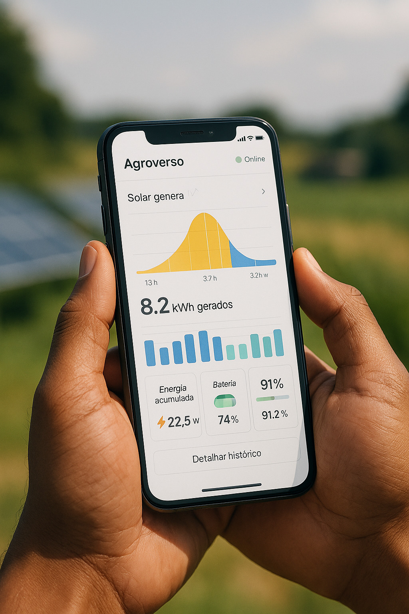
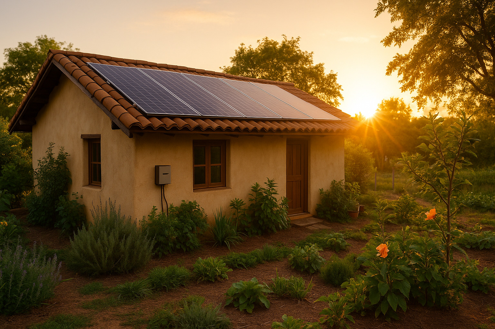
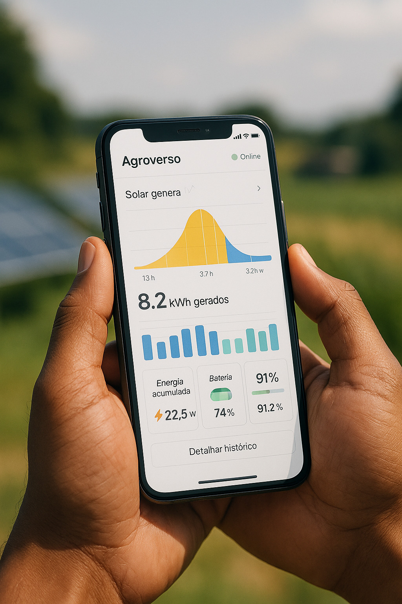
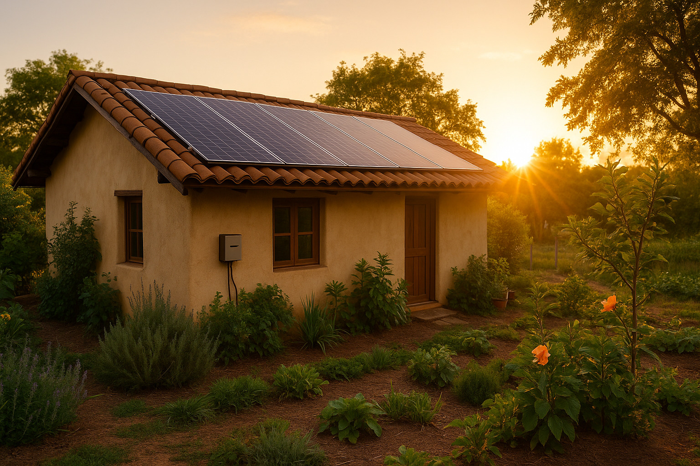

Energia Solar Inteligente
Autonomia energética conectada à inteligência digital regenerativa.
Galeria do Sistema
 



Sobre o sistema
O Sistema de Energia Solar Inteligente Agroverso oferece geração fotovoltaica de alta performance, integração com sistemas de controle digital e autonomia energética real. Com painéis otimizados, inversores inteligentes e monitoramento em tempo real, o Agroverso coloca o poder do sol nas mãos do produtor regenerativo.
Benefícios principais
- ⚡ Monitoramento remoto em tempo real por aplicativo ou dashboard web
- 🌞 Geração limpa, silenciosa e contínua com impacto ambiental positivo
- 📊 Visualização gráfica de geração, consumo e eficiência
- 🌤️ Operação otimizada mesmo em dias nublados ou com baixa irradiação
- 🔋 Compatível com baterias e micro-redes híbridas para independência total
Aplicações recomendadas
Recomendado para propriedades rurais, sítios agroecológicos, estufas, agrovilas, galpões, carports e comunidades regenerativas. O sistema é modular, expansível e pode operar tanto conectado à rede quanto de forma totalmente isolada.
Solicite seu orçamento agora mesmo
Atendimento especializado para sua propriedade, comunidade ou iniciativa regenerativa.
📲 Solicitar orçamento via WhatsApp